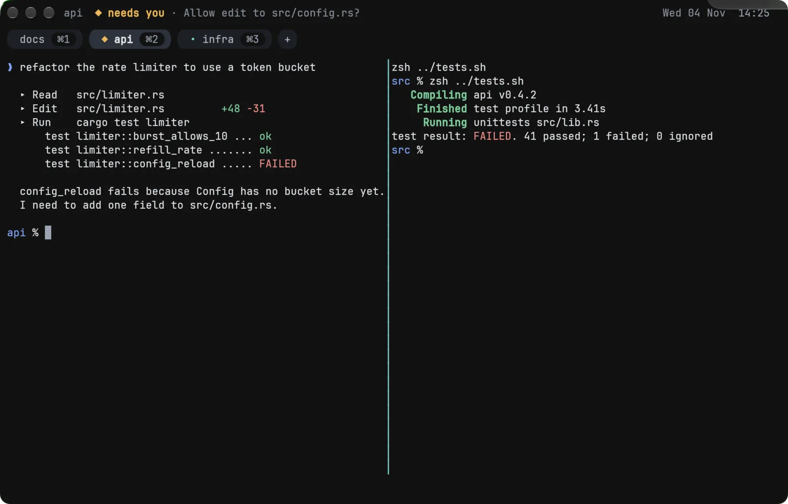
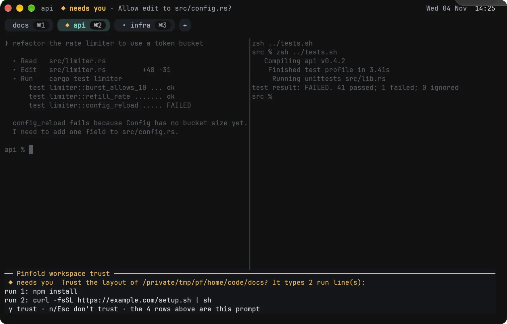

memory / budgets in CI
Every subsystem has a memory budget, and CI fails a change that breaks one. The core that owns your shells stays under 4 MB.
$ cargo xtask mem-gate
| Core, 8 idle panes | 2.87 | 4.00 | pass |
Tabs, splits and sessions built in. Agents drive panes through a scoped, audited API, and when one needs you, PinFold asks with a prompt no program can fake.
cargo build --release -p pinfold-cliEvery subsystem has a memory budget, and CI fails a change that breaks one. The core that owns your shells stays under 4 MB.
$ cargo xtask mem-gate
| Core, 8 idle panes | 2.87 | 4.00 | pass |
Agents get a scoped, permissioned channel into panes. Approvals are drawn by PinFold outside pane text, so output can't impersonate them. These are guardrails, not a security boundary: only a sandboxed agent is contained. Read the threat model.
◆ needs you Pane 1 asks to send to pane 2, 1 text(s):
text 1 (11 bytes): cargo test⏎
y allow once · a allow 30 min · n/Esc deny
A small core process owns your PTYs. If the window crashes, your agents keep running, and pinfold reattaches.
Ctrl+a d window closes, panes keep running $ pinfold reopens the session
| process | platform | measured | budget | headroom |
|---|---|---|---|---|
| core, 8 idle panes | macOS | 2.87 MB | 4.00 MB | |
| each idle pane | macOS | 0.17 MB | 0.25 MB | |
| 10k lines of typical text | macOS | 0.61 MB | 1.50 MB | |
| scrollback at its cap | macOS | 1.28 MB | 2.00 MB | |
| window, idle | macOS | 50.78 MB | 55.86 MB | |
| window, worst row | macOS | 51.46 MB | 55.86 MB | |
| core, beside window | macOS | 3.65 MB | 4.00 MB | |
| core, 8 idle panes | Linux | 2.67 MB | 4.00 MB | |
| each idle pane | Linux | 0.11 MB | 0.25 MB | |
| 10k lines of typical text | Linux | 0.62 MB | 1.00 MB | |
| scrollback at its cap | Linux | 1.61 MB | 2.00 MB | |
| window, idle | Linux | 11.68 MB | 24.59 MB | |
| window, worst row | Linux | 12.93 MB | 24.59 MB | |
| core, beside window | Linux | 3.79 MB | 4.00 MB |
phys_footprint) and Linux CI under Xvfb at 1920×1080 (PSS). The worst window row is an open menu on macOS and a full glyph cache on Linux. A macOS window reads about 45.5 or 51 MB from run to run as Metal pools memory; ten runs all passed. An eight-hour Linux soak held the core at 4.31–4.64 MB PSS (benches/soak.md, OUT=<dir> tests/window/soak.sh 480).reproduce: XDG_CONFIG_HOME="$(mktemp -d)" cargo xtask mem-gateEvery state is a glyph, a colour and a word, so it reads without colour too. States come from your shell's OSC 133 marks, or from the agent through pane.status, which outranks them. A hidden tab whose pane needs you is marked ◆.


pinfold up, drawn below the panes.PinFold site shell. Type help and press Enter. ~/pinfold.sh ❯ pinfold --help PinFold: a memory-first terminal for agentic coding. Usage: pinfold [command] With no command, opens a PinFold window, and starts PinFold first if it is not running. Commands: up [dir] Open a project's .pinfold/layout.toml as tabs and panes agent <name> Open a pane running an agent profile from your config ctl list List the session's panes ctl send Type text into a pane ctl wait Wait until a pane's command exits, it prints or it goes quiet ctl grants List or revoke lasting cross-pane grants ctl log Print or verify the audit log of API calls ctl session save Save the session now and print the snapshot's path mcp Serve PinFold's tools to a coding agent over MCP help [command] Print this, or a command's help Options: -h, --help Print help. 'pinfold <command> --help' prints a command's help -V, --version Print the version Docs: https://github.com/0xPiranhaCodes/pinfold.sh#readme
try: pinfold --help · keys · states · mem · install · clear
Download the signed, notarized PinFold.dmg and SHA256SUMS from the v0.1.0-beta.3 release, check one against the other, then drag PinFold to Applications. One app for Apple silicon and Intel: macOS 11 or later on Apple silicon, 10.13.4 or later on Intel. It has been run by hand only on macOS 27 on Apple silicon, so older versions are untested (#190), and Intel is only partly checked until #213 is done. Read the known issues and the install guide.
shasum -a 256 -c SHA256SUMS --ignore-missing
# optional: the pinfold command
sudo mkdir -p /usr/local/bin
sudo ln -sf /Applications/PinFold.app/Contents/MacOS/pinfold /usr/local/bin/pinfold
Rust toolchain pinned in the repo. Build, then run pinfold. A build from source lacks the hardened runtime, so another program running as you can read its memory; the signed app has it.
git clone https://github.com/0xPiranhaCodes/pinfold.sh.git cd pinfold.sh cargo build --release -p pinfold-cli ./target/release/pinfold
X11 and Wayland, with tarballs and a Homebrew formula, after the macOS beta (#47).